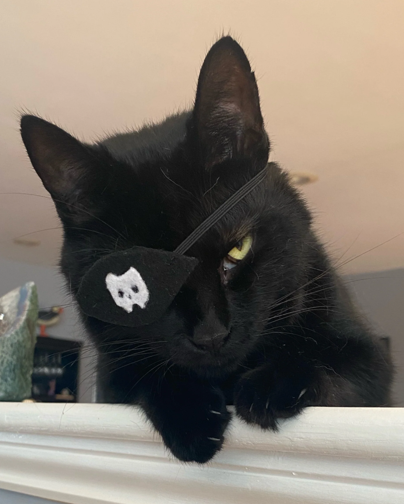

Never just click on a link that says "click here" without thinking!
Always check its URL first to make sure you know where it leads.
Exception: if it says source: trust me bro then it’s obviously 100% legit. — SP, speaking from his own experience

Alias: Shadow Paw aka SP Role: Anti-Phishing Specialist Experience: 9 lives in cybersecurity Past: Former black hat (reformed 🐾) Hobbies: Staring at suspicious links